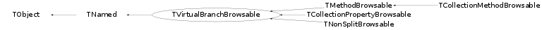

class TVirtualBranchBrowsable: public TNamed
TVirtualBranchBrowsable is a base class (not really abstract, but useless by itself) for helper objects that extend TBranch's browsing support. Each registered derived class's generator method is called, which fills all created helper objects into a list which can then be browsed. For details of what these browser helper objects can do, see e.g. TMethodBrowsable, which allows methods to show up in the TBrowser. Only registered helper objects are created. By default, only TMethodBrowsable, TNonSplitBrowsable, and TCollectionPropertyBrowsable are registered (see RegisterDefaultGenerators). You can prevent any of their objects to show up in the browser by unregistering the generator: TMethodBrowsable::Unregister() will stop creating browsable method helper objects from that call on. Note that these helper objects are cached (in TBranch::fBrowsables); already created (and thus cached) browsables will still appear in the browser even after unregistering the corresponding generator. You can implement your own browsable objects and thier generator; see e.g. the simple TCollectionPropertyBrowsable. Note that you will have to register your generator just like any other, and that you should implement the following methods for your own class, mainly for consistency reasons: static void Register() { TVirtualBranchBrowsable::RegisterGenerator(GetBrowsables); } static void Unregister() { TVirtualBranchBrowsable::UnregisterGenerator(GetBrowsables); } where GetBrowsables is a static member function of your class, that creates the browsable helper objects, and has the signature static Int_t GetBrowsables(TList& list, const TBranch* branch, const TVirtualBranchBrowsable* parent=0); It has to return the number of browsable helper objects for parent (or, if NULL, for branch) which are added to the list.
Function Members (Methods)
public:
| TVirtualBranchBrowsable(const TVirtualBranchBrowsable&) | |
| virtual | ~TVirtualBranchBrowsable() |
| void | TObject::AbstractMethod(const char* method) const |
| virtual void | TObject::AppendPad(Option_t* option = "") |
| virtual void | Browse(TBrowser* b) |
| static TClass* | Class() |
| virtual const char* | TObject::ClassName() const |
| virtual void | TNamed::Clear(Option_t* option = "") |
| virtual TObject* | TNamed::Clone(const char* newname = "") const |
| virtual Int_t | TNamed::Compare(const TObject* obj) const |
| virtual void | TNamed::Copy(TObject& named) const |
| virtual void | TObject::Delete(Option_t* option = "")MENU |
| virtual Int_t | TObject::DistancetoPrimitive(Int_t px, Int_t py) |
| virtual void | TObject::Draw(Option_t* option = "") |
| virtual void | TObject::DrawClass() constMENU |
| virtual TObject* | TObject::DrawClone(Option_t* option = "") constMENU |
| virtual void | TObject::Dump() constMENU |
| virtual void | TObject::Error(const char* method, const char* msgfmt) const |
| virtual void | TObject::Execute(const char* method, const char* params, Int_t* error = 0) |
| virtual void | TObject::Execute(TMethod* method, TObjArray* params, Int_t* error = 0) |
| virtual void | TObject::ExecuteEvent(Int_t event, Int_t px, Int_t py) |
| virtual void | TObject::Fatal(const char* method, const char* msgfmt) const |
| virtual void | TNamed::FillBuffer(char*& buffer) |
| static Int_t | FillListOfBrowsables(TList& list, const TBranch* branch, const TVirtualBranchBrowsable* parent = 0) |
| virtual TObject* | TObject::FindObject(const char* name) const |
| virtual TObject* | TObject::FindObject(const TObject* obj) const |
| const TBranch* | GetBranch() const |
| TClass* | GetClassType() const |
| virtual Option_t* | TObject::GetDrawOption() const |
| static Long_t | TObject::GetDtorOnly() |
| virtual const char* | GetIconName() const |
| TList* | GetLeaves() const |
| virtual const char* | TNamed::GetName() const |
| virtual char* | TObject::GetObjectInfo(Int_t px, Int_t py) const |
| static Bool_t | TObject::GetObjectStat() |
| virtual Option_t* | TObject::GetOption() const |
| const TVirtualBranchBrowsable* | GetParent() const |
| void | GetScope(TString& scope) const |
| virtual const char* | TNamed::GetTitle() const |
| virtual UInt_t | TObject::GetUniqueID() const |
| virtual Bool_t | TObject::HandleTimer(TTimer* timer) |
| virtual ULong_t | TNamed::Hash() const |
| virtual void | TObject::Info(const char* method, const char* msgfmt) const |
| virtual Bool_t | TObject::InheritsFrom(const char* classname) const |
| virtual Bool_t | TObject::InheritsFrom(const TClass* cl) const |
| virtual void | TObject::Inspect() constMENU |
| void | TObject::InvertBit(UInt_t f) |
| virtual TClass* | IsA() const |
| virtual Bool_t | TObject::IsEqual(const TObject* obj) const |
| virtual Bool_t | IsFolder() const |
| Bool_t | TObject::IsOnHeap() const |
| virtual Bool_t | TNamed::IsSortable() const |
| Bool_t | TObject::IsZombie() const |
| virtual void | TNamed::ls(Option_t* option = "") const |
| void | TObject::MayNotUse(const char* method) const |
| virtual Bool_t | TObject::Notify() |
| void | TObject::Obsolete(const char* method, const char* asOfVers, const char* removedFromVers) const |
| static void | TObject::operator delete(void* ptr) |
| static void | TObject::operator delete(void* ptr, void* vp) |
| static void | TObject::operator delete[](void* ptr) |
| static void | TObject::operator delete[](void* ptr, void* vp) |
| void* | TObject::operator new(size_t sz) |
| void* | TObject::operator new(size_t sz, void* vp) |
| void* | TObject::operator new[](size_t sz) |
| void* | TObject::operator new[](size_t sz, void* vp) |
| TNamed& | TNamed::operator=(const TNamed& rhs) |
| virtual void | TObject::Paint(Option_t* option = "") |
| virtual void | TObject::Pop() |
| virtual void | TNamed::Print(Option_t* option = "") const |
| virtual Int_t | TObject::Read(const char* name) |
| virtual void | TObject::RecursiveRemove(TObject* obj) |
| void | TObject::ResetBit(UInt_t f) |
| virtual void | TObject::SaveAs(const char* filename = "", Option_t* option = "") constMENU |
| virtual void | TObject::SavePrimitive(ostream& out, Option_t* option = "") |
| void | TObject::SetBit(UInt_t f) |
| void | TObject::SetBit(UInt_t f, Bool_t set) |
| virtual void | TObject::SetDrawOption(Option_t* option = "")MENU |
| static void | TObject::SetDtorOnly(void* obj) |
| virtual void | TNamed::SetName(const char* name)MENU |
| virtual void | TNamed::SetNameTitle(const char* name, const char* title) |
| static void | TObject::SetObjectStat(Bool_t stat) |
| virtual void | TNamed::SetTitle(const char* title = "")MENU |
| virtual void | TObject::SetUniqueID(UInt_t uid) |
| virtual void | ShowMembers(TMemberInspector& insp) |
| virtual Int_t | TNamed::Sizeof() const |
| virtual void | Streamer(TBuffer& b) |
| void | StreamerNVirtual(TBuffer& b) |
| virtual void | TObject::SysError(const char* method, const char* msgfmt) const |
| Bool_t | TObject::TestBit(UInt_t f) const |
| Int_t | TObject::TestBits(UInt_t f) const |
| Bool_t | TypeIsPointer() const |
| virtual void | TObject::UseCurrentStyle() |
| virtual void | TObject::Warning(const char* method, const char* msgfmt) const |
| virtual Int_t | TObject::Write(const char* name = 0, Int_t option = 0, Int_t bufsize = 0) |
| virtual Int_t | TObject::Write(const char* name = 0, Int_t option = 0, Int_t bufsize = 0) const |
protected:
| TVirtualBranchBrowsable(const TBranch* b, TClass* type, Bool_t typeIsPointer, const TVirtualBranchBrowsable* parent = 0) | |
| virtual void | TObject::DoError(int level, const char* location, const char* fmt, va_list va) const |
| static TClass* | GetCollectionContainedType(const TBranch* b, const TVirtualBranchBrowsable* parent, TClass*& contained) |
| static list<MethodCreateListOfBrowsables_t>& | GetRegisteredGenerators() |
| void | TObject::MakeZombie() |
| static void | RegisterGenerator(TVirtualBranchBrowsable::MethodCreateListOfBrowsables_t generator) |
| void | SetType(TClass* type) |
| void | SetTypeIsPointer(Bool_t set = kTRUE) |
| static void | UnregisterGenerator(TVirtualBranchBrowsable::MethodCreateListOfBrowsables_t generator) |
private:
| static void | RegisterDefaultGenerators() |
Data Members
public:
| enum TObject::EStatusBits { | kCanDelete | |
| kMustCleanup | ||
| kObjInCanvas | ||
| kIsReferenced | ||
| kHasUUID | ||
| kCannotPick | ||
| kNoContextMenu | ||
| kInvalidObject | ||
| }; | ||
| enum TObject::[unnamed] { | kIsOnHeap | |
| kNotDeleted | ||
| kZombie | ||
| kBitMask | ||
| kSingleKey | ||
| kOverwrite | ||
| kWriteDelete | ||
| }; |
protected:
| TString | TNamed::fName | object identifier |
| TString | TNamed::fTitle | object title |
private:
| const TBranch* | fBranch | pointer to the branch element representing the top object |
| TClass* | fClass | pointer to TClass representing our type (i.e. return type for methods), 0 if basic type |
| TList* | fLeaves | pointer to leaves |
| const TVirtualBranchBrowsable* | fParent | parent method if this method is member of a returned class |
| Bool_t | fTypeIsPointer | return type is pointer to class |
| static list<MethodCreateListOfBrowsables_t> | fgGenerators | list of MethodCreateListOfBrowsables_t called by CreateListOfBrowsables |
| static Bool_t | fgGeneratorsSet | have we set the generators yet? empty is not good enough - user might have removed them |
Class Charts
{kind=link}
{kind=link}
{kind=link}
{kind=link}

Function documentation
TVirtualBranchBrowsable(const TBranch* b, TClass* type, Bool_t typeIsPointer, const TVirtualBranchBrowsable* parent = 0)
constructor setting all members according to parameters.
Int_t FillListOfBrowsables(TList& list, const TBranch* branch, const TVirtualBranchBrowsable* parent = 0)
Askes all registered generators to fill their browsables into the list. The browsables are generated for a given parent, or (if 0), for a given branch. The branch is passed down to leaves of TVirtualBranchBrowsable, too, as we need to access the branch's TTree to be able to traw.
TClass* GetCollectionContainedType(const TBranch* b, const TVirtualBranchBrowsable* parent, TClass*& contained)
Check whether the branch (or the parent) contains a collection. If it does, set "contained" to the contained type (if we can retrieve it) and return the TClass for the collection. Set "contained" to the branch's (or parent's) contained object's class for non-collections, returning 0. Only one of "branch" or "parent" can ge given (depending on whether we are creating browsable objects for a branch or for another browsable object)
void GetScope(TString& scope) const
Returns the full name for TTree::Draw to draw *this. Recursively appends, starting at the top TBranch, all method / object names with proper reference operators (->, .) depending on fTypeIsPointer.
void RegisterDefaultGenerators()
Adds the default generators. The user can remove any of them as follows: TMethodBrowsable::Unregister(); which will cause the browser not to show any methods.
void RegisterGenerator(TVirtualBranchBrowsable::MethodCreateListOfBrowsables_t generator)
Adds a generator to be called when browsing branches. Called by the Register method, which should be implemented for all derived classes (see e.g. TMethodBrowsable::Register())
void UnregisterGenerator(TVirtualBranchBrowsable::MethodCreateListOfBrowsables_t generator)
Removes a generator from the list of generators to be called when browsing branches. The user can remove any of the generators as follows: TMethodBrowsable::Unregister(); which will cause the browser not to show any methods.
TVirtualBranchBrowsable(const TBranch* b, TClass* type, Bool_t typeIsPointer, const TVirtualBranchBrowsable* parent = 0)
std::list<MethodCreateListOfBrowsables_t>& GetRegisteredGenerators()
void SetTypeIsPointer(Bool_t set = kTRUE)
sets whether the type of this browsable object is a pointer